15 critérios (CA01–CA13, CA02b, CA-T1). 13 atendidos — 6 por navegador (CA05, CA06, CA07, CA09, CA13, CA-T1), 4 combinando tela/terminal e verificação automatizada (CA02, CA02b, CA04, CA10) e 3 automatizados (CA03, CA08, CA11). CA01 atendido com ressalva (P7 sem a permissão de apuração). CA12 não atendido literalmente: unidade e entidade de outra organização respondem 403, não 404 — sem vazamento de dado. A massa foi gerada pela modalidade híbrida: E1–E3 pelo fluxo manual (simulado pelo executor), E4–E16 pelo comando massa-demo:popular e a conferência E17–E20 pelo massa:conferir, com 0 divergências na apuração.
| CA | Critério | Status |
|---|---|---|
| CA01 | Município de demonstração gerado | ATENDIDO · navegador + automatizado |
| CA02 | Geração bloqueada em produção | ATENDIDO · navegador + automatizado |
| CA02b | Falha ao identificar o ambiente | ATENDIDO · navegador + automatizado |
| CA03 | Não existe caminho pelo sistema | ATENDIDO · automatizado |
| CA04 | Mesma semente, mesmo resultado | ATENDIDO · navegador + automatizado |
| CA05 | Números conferíveis à mão | ATENDIDO · navegador |
| CA06 | Casos que parecem erro estão presentes | ATENDIDO · navegador |
| CA07 | Pendências propositais presentes (revisado, A1; depende da 10994b) | ATENDIDO · navegador |
| CA08 | Família acompanhada por duas unidades | ATENDIDO · automatizado |
| CA09 | Encaminhamento sem desfecho concedendo acesso | ATENDIDO · navegador |
| CA10 | Pessoas atendidas sem CPF (revisado, A2) | ATENDIDO · navegador + automatizado |
| CA11 | Nenhum CPF de pessoa real | ATENDIDO · automatizado |
| CA12 | Isolamento preservado | NÃO ATENDIDO |
| CA13 | Documentação da massa | ATENDIDO · navegador |
| CA-T1 | Preflight bloqueia antes de apagar | ATENDIDO · navegador |
Critério (Gherkin): Cenário: CA01 — Município de demonstração gerado Dado que executei "npm run massa" contra um ambiente de homologação Quando a execução concluir sem erro Então existe a organização "Município Demonstração SigSUAS" E ela tem dois CRAS, um CREAS e profissionais lotados E tem 60 famílias, cerca de 200 pessoas e registros em 2026-06, 2026-07 e 2026-08
Como foi testado: Base populada pela modalidade híbrida; telas de Unidades e Profissionais vistas pelo Master; painel geo visto pelo P6; contagens conferidas por SQL somente leitura na E20 (qa/massa-dados/relatorios/2026-10-01_0914).
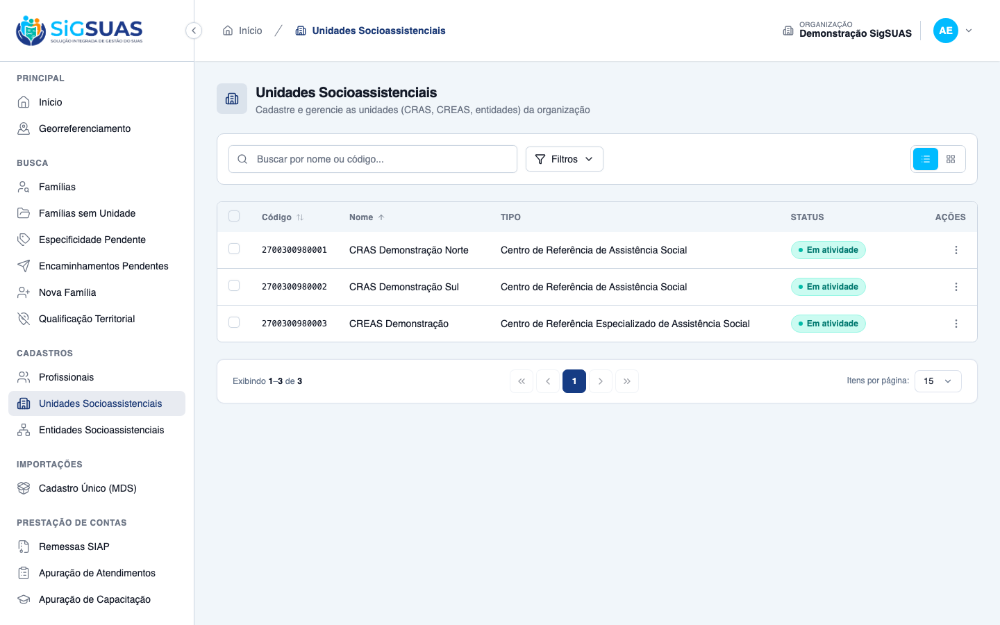
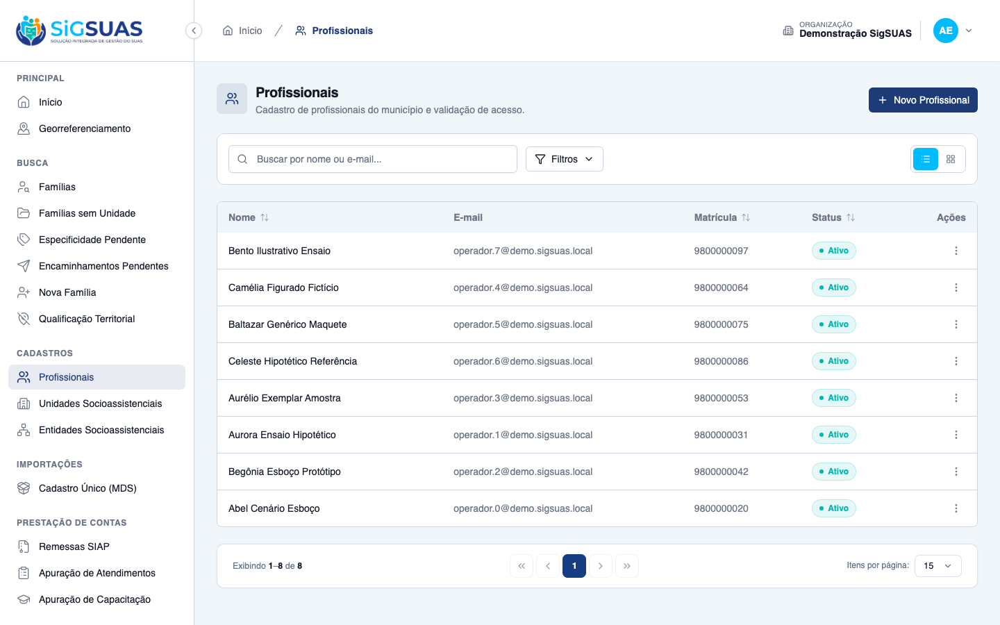
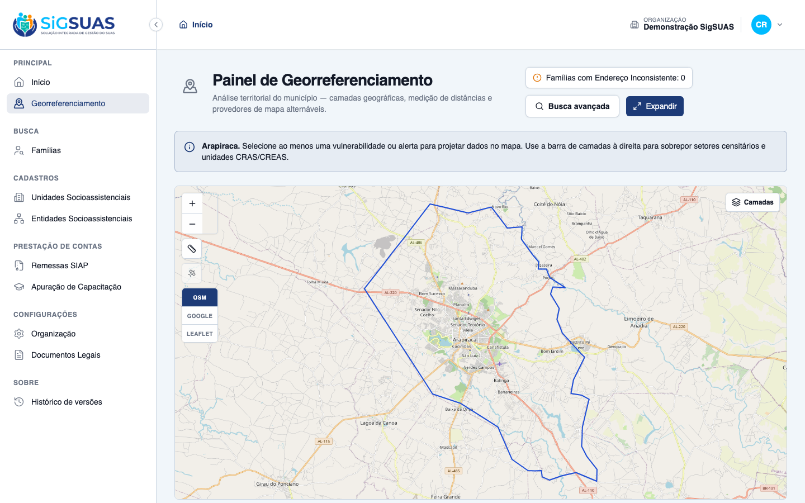
Critério (Gherkin): Cenário: CA02 — Geração bloqueada em produção Dado que "GET /api/environment" responde {"environment":"production"} Quando executo "npm run massa" Então a execução é recusada antes do reset e antes de qualquer requisição de escrita E a mensagem informa que o ambiente se identifica como produção E a contagem de registros da base é a mesma de antes
Como foi testado: Uma cópia da API real foi servida com APP_ENV=production e o executor foi apontado para ela (API_BASE). Contagem de tenants antes e depois por SQL. Pest cobre a normalização (EnvironmentEndpointTest).
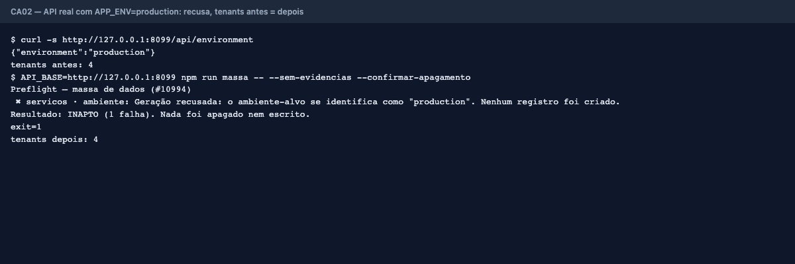
Critério (Gherkin): Cenário: CA02b — Falha ao identificar o ambiente Dado que "GET /api/environment" não responde ou responde com erro Quando executo "npm run massa" Então a execução é recusada, pela mesma regra da produção
Como foi testado: Executor apontado para a API fora do ar. A suíte infra.test.ts cobre também resposta 500, JSON inválido, chave ausente e valor fora da lista permitida.
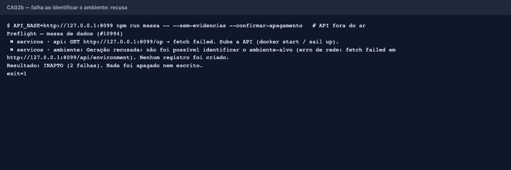
Critério (Gherkin): Cenário: CA03 — Não existe caminho pelo sistema Dado que sou Master ou Administrador Quando percorro os menus e as rotas do admin e do client Então não existe ação, tela ou permissão de gerar massa E a única rota nova é "GET /api/environment", que só informa o ambiente
Como foi testado: Varredura da E20: rotas da API (route:list), literais de menu e rota do admin e do client, e permissões.
Evidência por cobertura automatizada — ver Anexo.
Critério (Gherkin): Cenário: CA04 — Mesma semente, mesmo resultado Dado duas execuções com "--evidencias" em bases recriadas Quando executo "npm run massa:comparar" com as duas pastas Então os dois snapshot.json são idênticos por chave de negócio E os números da apuração são idênticos
Como foi testado: npm run massa:comparar entre duas execuções completas pela API em bases recriadas, e entre a execução pela API e a conferência do seed (--modo=api-x-seed).
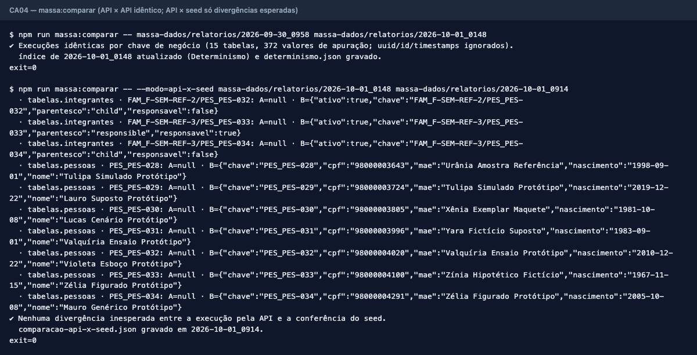
Critério (Gherkin): Cenário: CA05 — Números conferíveis à mão Dado que a massa foi gerada Quando consulto a apuração de 2026-07 do "CRAS Demonstração Norte" Então cada contador coincide com o esperado.json E a etapa-17 do relatório mostra esperado × apurado sem divergência
Como foi testado: Master abre a Apuração de Atendimentos de 07/2026 (todas as unidades). A E17 compara cada contador com o esperado.json nos 3 meses × 3 unidades (qa/massa-dados/relatorios/2026-10-01_0914).
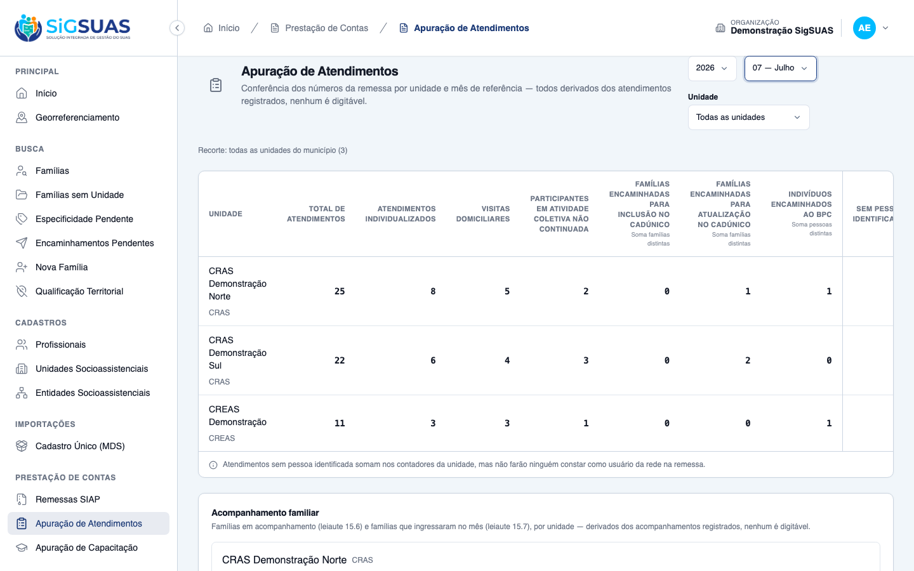
Critério (Gherkin): Cenário: CA06 — Casos que parecem erro estão presentes Dado que a massa foi gerada Quando consulto a apuração Então a família F-IDOSO gera "elderly_outside_range" sem incrementar faixa etária E a família F-GRUPO conta em "families_in_groups" com zero nas quatro faixas E uma unidade tem a soma dos perfis maior que o total de novas famílias E cada caso está descrito em elenco.md
Como foi testado: Apuração de 07/2026, seção do SCFV (leiaute 15.8) e perfis das novas famílias (15.7); asserções nominais da E17.
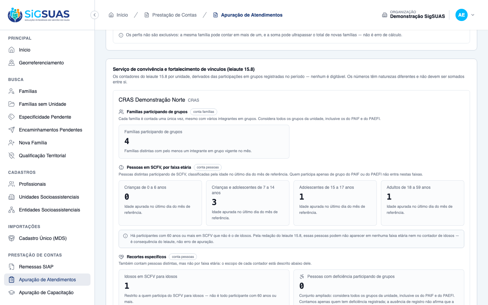
Critério (Gherkin): Cenário: CA07 — Pendências propositais presentes (revisado, A1; depende da 10994b) Dado que a massa foi gerada Quando o Master abre a apuração sem filtro de unidade Então a seção "Pendências de cadastro" mostra as cinco pendências da RN10 E cada contagem coincide com a documentada no esperado.json
Como foi testado: Master abre a apuração sem filtro de unidade; seção “Pendências de cadastro” (10994b). Tela de entidades mostrando a ENT-2 sem CNEAS.
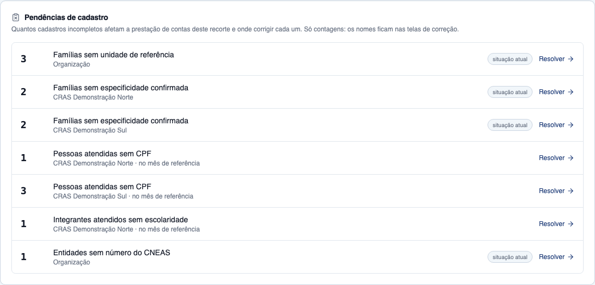
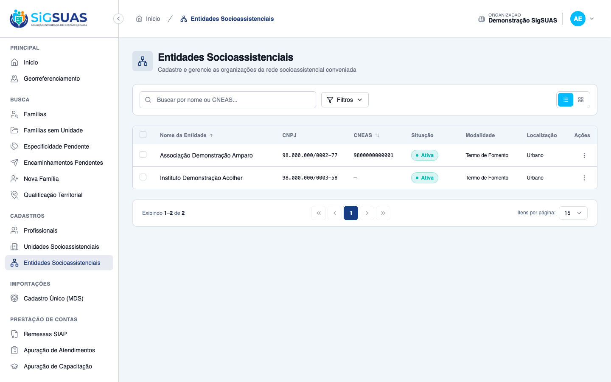
Critério (Gherkin): Cenário: CA08 — Família acompanhada por duas unidades Dado que F-DUPLA está em PAIF no CRAS Norte e em PAEFI no CREAS Quando consulto a apuração das duas unidades no mesmo mês Então F-DUPLA é contada em cada uma
Como foi testado: E17: F-DUPLA (PAIF no CRAS Norte e PAEFI no CREAS, P4 com as duas lotações) conferida nos contadores de acompanhamento das duas unidades no mesmo mês.
Evidência por cobertura automatizada — ver Anexo.
Critério (Gherkin): Cenário: CA09 — Encaminhamento sem desfecho concedendo acesso Dado que F-ENC tem encaminhamento de trânsito interno para o CRAS Sul, sem desfecho Quando entro como P2, lotado só no CRAS Sul Então consigo abrir o prontuário de F-ENC
Como foi testado: P2 (lotado só no CRAS Sul) entra e abre o prontuário de F-ENC; E20 confere o HTTP e o desfecho vazio.
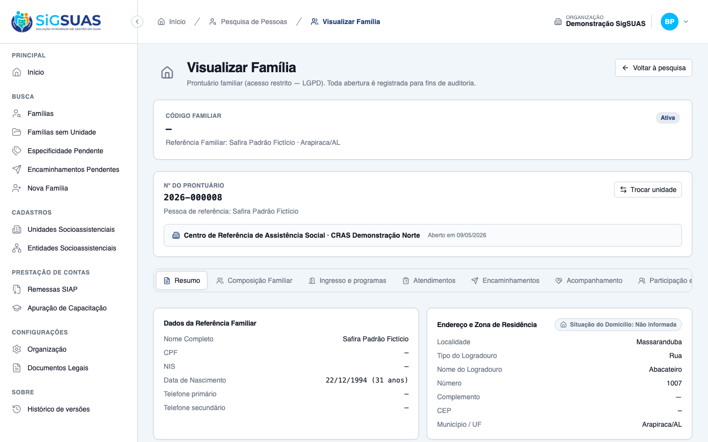
Critério (Gherkin): Cenário: CA10 — Pessoas atendidas sem CPF (revisado, A2) Dado que a massa foi gerada Quando consulto as pessoas atendidas no mês Então há pessoas com a indicação "sem CPF" (without_cpf) E elas estão contadas na seção "Pendências de cadastro" da apuração
Como foi testado: Seção de pendências da apuração (07/2026) e E20 (SQL somente leitura).
Critério (Gherkin): Cenário: CA11 — Nenhum CPF de pessoa real Dado que a massa foi gerada Quando verifico os CPFs de pessoas e usuários da organização demo Então todos começam com "98", têm DV válido e seguem a sequência do elenco
Como foi testado: E20: CPFs de pessoas e usuários da organização demo conferidos por SQL somente leitura.
Evidência por cobertura automatizada — ver Anexo.
Critério (Gherkin): Cenário: CA12 — Isolamento preservado Dado que existe outra organização na base Quando P1 tenta ler família, unidade ou entidade da outra organização Então recebe 404 E um usuário da outra organização também recebe 404 ao tentar ler a organização demo
Como foi testado: E20: P1 tenta ler família, unidade e entidade da “Organização Controle SigSUAS” (criada pelo fluxo real); o Master dela tenta o inverso.
Evidência por cobertura automatizada — ver Anexo.
Critério (Gherkin): Cenário: CA13 — Documentação da massa Dado que a massa foi gerada com "--evidencias" Quando abro o index.html da execução Então vejo composição, cenários, pendências propositais e números esperados por mês e unidade
Como foi testado: Índice do relatório de evidências gerado pela conferência híbrida (qa/massa-dados/relatorios/2026-10-01_0914/index.html).
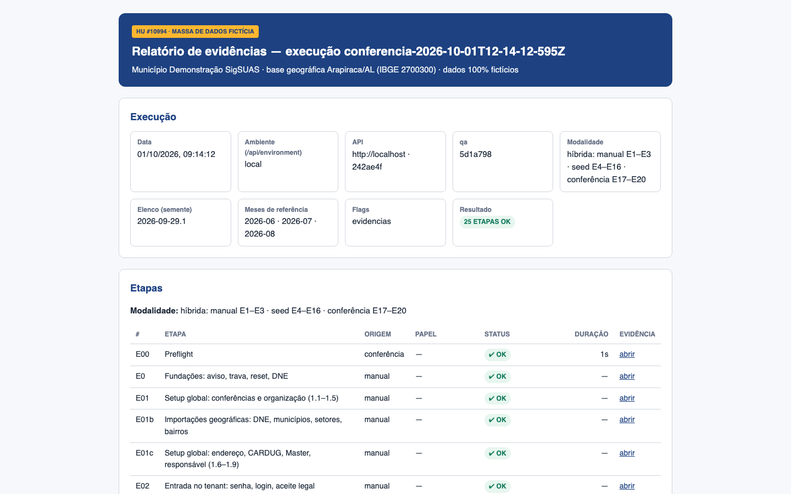
Critério (Gherkin): Cenário: CA-T1 — Preflight bloqueia antes de apagar Dado que o worker de fila está parado Quando executo "npm run massa" Então o preflight aponta o worker com ✖ e a instrução para corrigir E a execução termina antes do aviso de apagamento, sem reset
Como foi testado: docker stop api-laravel.worker-1 e npm run massa; depois o worker é religado. Para comparação, o preflight APTO com a stack completa.
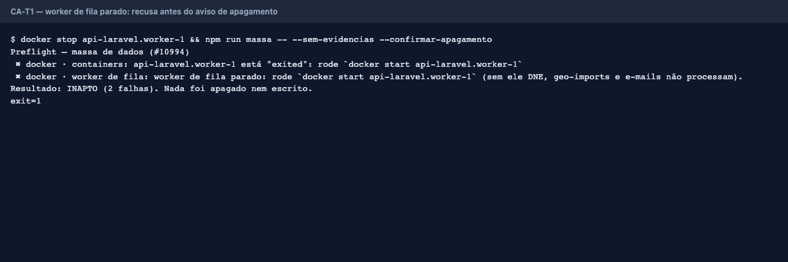
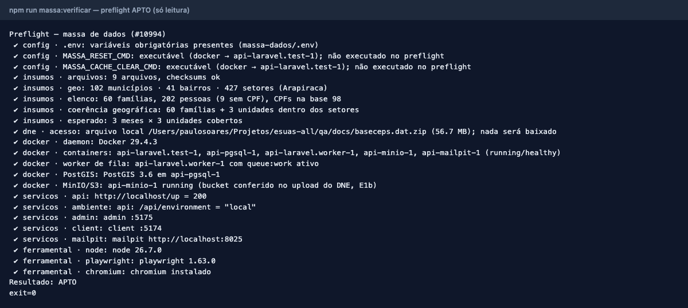
O ticket foi validado pela nova modalidade híbrida: cadastro manual (organização, Master, DNE e camadas, primeiro acesso), seed das etapas E4–E16 (php artisan massa-demo:popular) e conferência. Quatro cenários só existem por seed porque a API os recusa: entidade sem CNEAS, famílias sem unidade de referência, dados de perfil do 15.7 (PBF, renda, trabalho infantil) e endereço da família. Roteiro: .planning/roadmap-massa-dados/11-roteiro-validacao-hibrida.md.
A entidade sem CNEAS (pendência proposital do CA07) é bloqueante na conferência prévia: no modo seed a remessa não é gerada (a E18 confere esse bloqueio). No modo API a remessa é gerada e não enviada ao TCE-AL. Decisão pendente do PO: se a pendência proposital pode impedir a remessa na demonstração.
A E17 compara 432 contadores esperados com 372 valores presentes na resposta. Os 60 restantes são contadores missing_fields.* que a API omite quando valem zero; o comparador os trata como zero. Resultado: 0 divergências.
PASS Tests\Unit\Seeders\MassaDemoGuardTest
✓ it recusa produção mesmo confirmada with ('production') 0.01s
✓ it recusa produção mesmo confirmada with ('prod')
✓ it recusa produção mesmo confirmada with ('PRODUCTION')
✓ it recusa produção mesmo confirmada with (' Prod ')
✓ it recusa produção mesmo confirmada with ('')
✓ it recusa produção mesmo confirmada with (' ')
✓ it recusa fora de produção sem confirmação with ('local')
✓ it recusa fora de produção sem confirmação with ('testing')
✓ it recusa fora de produção sem confirmação with ('staging')
✓ it recusa fora de produção sem confirmação with ('development')
✓ it libera fora de produção quando confirmada with ('local')
✓ it libera fora de produção quando confirmada with ('testing')
✓ it libera fora de produção quando confirmada with ('staging')
✓ it libera fora de produção quando confirmada with ('development')
PASS Tests\Unit\Support\EnvironmentNameTest
✓ it normaliza o ambiente como produção por falha segura with dataset… 0.01s
✓ it normaliza o ambiente como produção por falha segura with dataset "só espaços"
✓ it normaliza o ambiente como produção por falha segura with dataset "prod"
✓ it normaliza o ambiente como produção por falha segura with dataset "PROD"
✓ it normaliza o ambiente como produção por falha segura with dataset "production"
✓ it normaliza o ambiente como produção por falha segura with dataset "Production com espaços"
✓ it normaliza os demais ambientes sem trocá-los with dataset "local"
✓ it normaliza os demais ambientes sem trocá-los with dataset "LOCAL com espaços"
✓ it normaliza os demais ambientes sem trocá-los with dataset "staging"
✓ it normaliza os demais ambientes sem trocá-los with dataset "testing"
PASS Tests\Feature\EnvironmentEndpointTest
✓ it responde 200 sem autenticação e sem header de tenant 0.38s
✓ it devolve apenas a chave environment 0.01s
✓ it trata prod, vazio e production como production with dataset "pro… 0.01s
✓ it trata prod, vazio e production como production with dataset "vaz… 0.01s
✓ it trata prod, vazio e production como production with dataset "pro… 0.01s
✓ it normaliza os demais ambientes 0.01s
✓ it não tem auth nem middlewares de tenant e tem throttle:60,1 0.02s
PASS Tests\Feature\Seeders\LocalDevSeederTest
✓ it refuses any environment without explicit confirmation 0.01s
✓ it allows a non-production environment once confirmed 0.01s
PASS Tests\Feature\Seeders\MassaDemoSeederTest
✓ it recusa produção mesmo com --force, sem escrever nada 2.07s
✓ it recusa sem --force nem MASSA_DEMO_SEED, sem escrever nada 1.97s
✓ it recusa sem o pré-requisito manual e aponta o passo do roteiro wi… 2.41s
✓ it recusa sem o pré-requisito manual e aponta o passo do roteiro wi… 2.12s
✓ it recusa sem o pré-requisito manual e aponta o passo do roteiro wi… 2.03s
✓ it recusa sem o pré-requisito manual e aponta o passo do roteiro wi… 2.15s
✓ it recusa insumo com sha256 divergente do manifest 2.12s
✓ it popula E4–E16 com a composição do elenco, os cenários só via see… 3.55s
✓ it é idempotente e determinística: 2ª execução não muda nada e uuid… 5.47s
✓ it recusa --etapas=E10-E16 sem as anteriores e, com elas, roda só o… 3.78s
✓ it não está no DatabaseSeeder 0.01s
✓ it o pré-requisito resolve o endereço pelo DNE do bairro 2.01s
✓ it P0–P7 aceitam os documentos legais vigentes da organização (gate… 3.87s
Tests: 46 passed (154 assertions)
Duration: 34.57s